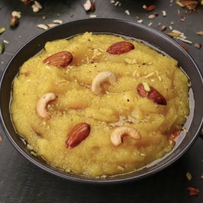

Ingredients:
- 1 cup pineapple (finely chopped or pureed)
- ½ cup semolina (sooji)
- ½ cup sugar (adjust to taste)
- 2 tbsp ghee (clarified butter)
- 1 cup water
- ¼ tsp cardamom powder
- 10-12 cashews, chopped
- 10-15 raisins
- A few saffron strands (optional, for color and aroma)

Instructions:
Roast the Semolina –
Heat ghee in a pan, add semolina, and roast on low heat until golden and aromatic.Prepare Pineapple Mixture –
In another pan, heat water, add pineapple pieces, sugar, and saffron. Cook until the pineapple softens.Combine Both Mixtures –
Slowly pour the pineapple mixture into the roasted semolina while stirring continuously to avoid lumps.Cook Until Thick –
Stir well and cook on low heat until the halwa thickens and ghee starts to release from the sides.Garnish & Serve -
Add cardamom powder, cashews, and raisins. Mix well and serve warm.